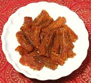

|
Bombay Duck, Fried #1India - Parsi | ||||
| Makes: Effort: Sched: DoAhead: |
4 app ** 1-3/4 hrs Yes |
Do not be fooled - this "duck" does not waddle or go "quack". Described by my appreciative guests as "fish jerky", this recipe is for dried salted fish - if you can get the "fresh" (previously frozen) see our Bombay Duck, Fried #2. | |||
| This recipe is from the Parsi (Persian Zoroastrian) community in Mumbai (formerly Bombay). It is often served as an appetizer accompanied with lemon or lime wedges and beer. It can also be crumbled over bland dishes for flavor. | |||||
|
7 1/2 1/2 1/2 1/2 ar |
t t t in |
Bombay Duck, dry (1) Salt Turmeric Chili Powder (2) Ginger root Oil |
Prep - (1-1/2 hr / 20 min work)
|